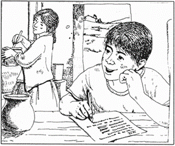
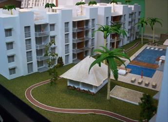
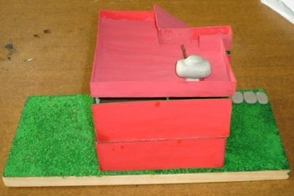
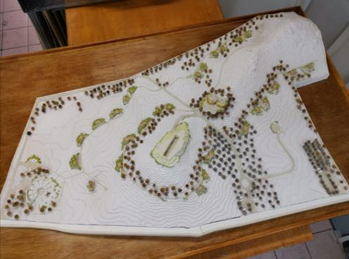
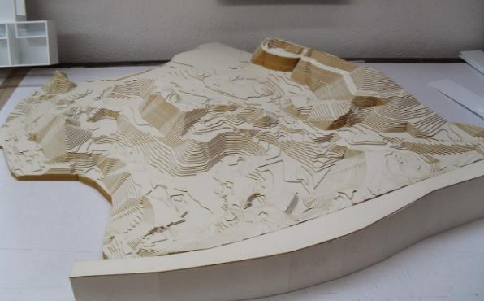
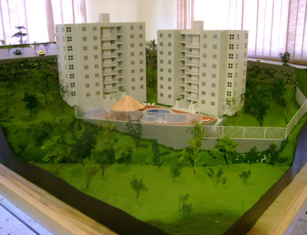
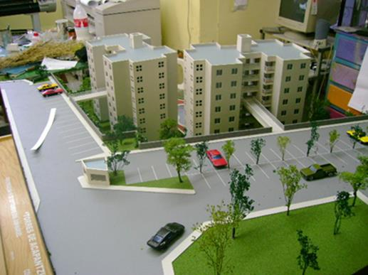

CAPÍTULO I
Introducción y Herramientas Conceptuales
1.1 ¿Qué es una maqueta?
Es la representación tridimensional, a escala, de una obra compleja. Mientras que los planos son 2D, la maqueta desvela problemas constructivos invisibles en papel.

Imagen 1.1: Maqueta de casa habitación.
1.2 Objetivo de las Maquetas
Implementar una base conceptual y didáctica. Representan la realidad objetiva mediante modelos simuladores tridimensionales.

Imagen 1.2: Maqueta topográfica profesional.
1.3 ELEMENTOS QUE COMPONEN UNA MAQUETA
El diseño armoniza el entorno humano e impulsa la creatividad. Aquí los cuatro pilares fundamentales:
1.3.1 Conceptuales
Ideas y conceptos no visibles (punto, línea, plano) que dependen de los planos y la necesidad del diseñador.

1.3.2 Visuales
Lo que realmente vemos: forma, medida, diseño, color y textura. Ayudan a la comprensión directa.

1.3.3 Relación
Ubicación e interrelación: dirección, posición, espacio y gravedad dentro del diseño arquitectónico.

1.3.4 Prácticos
Contenido y alcance: el significado de la función y la creatividad proyectada por el maquetista.

VISUALIZACIÓN TÉCNICA Y DESARROLLOS





1.4 al 1.6: Análisis de Valor
- ✔ Ventajas: Visión espacial intuitiva y detección de errores.
- ✘ Desventajas: Tiempo de ejecución y fragilidad.
1.7 al 1.9: La Maqueta Profesional
"Como herramienta de diseño permite jugar con volúmenes; como herramienta de comunicación es el puente perfecto con el cliente."

